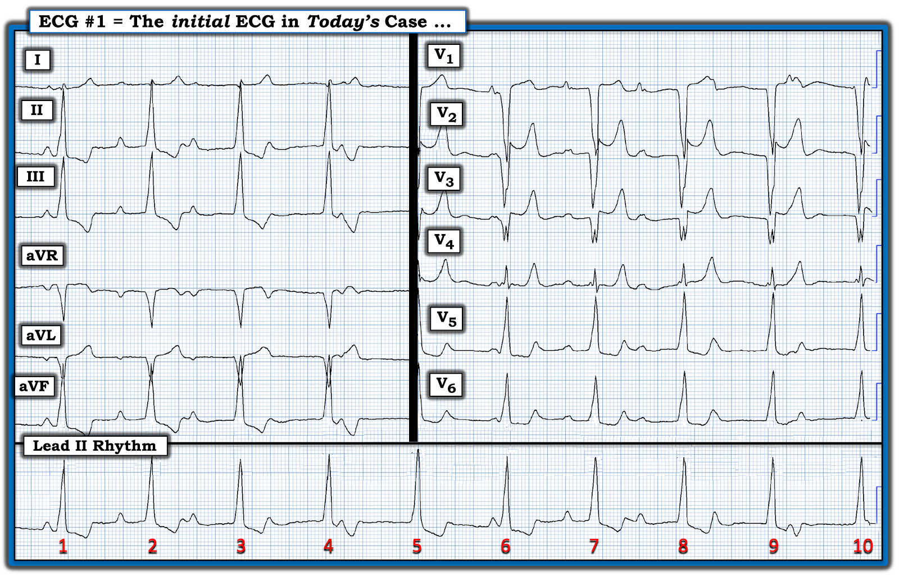
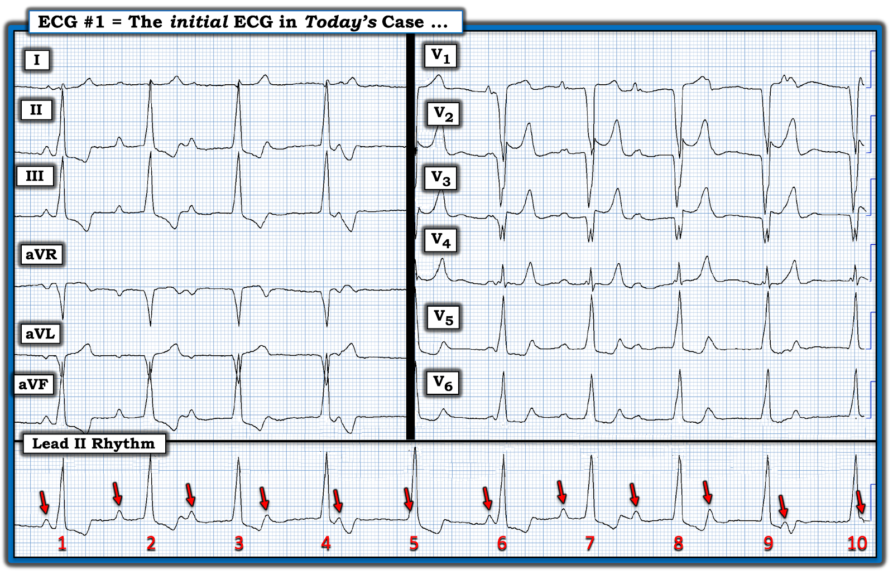
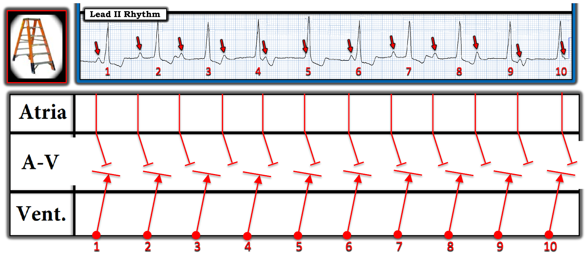
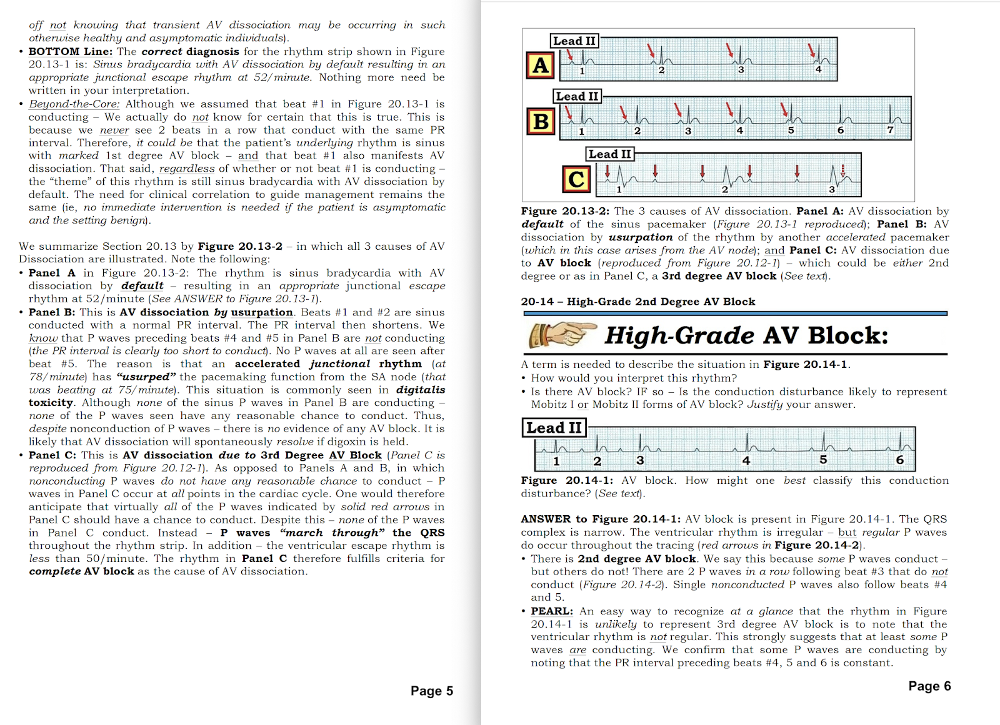
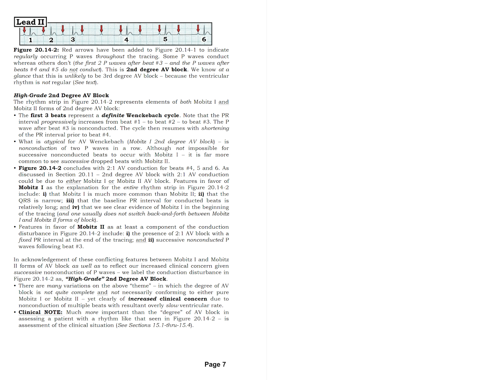

ECG Blog #390 — Không có thông tin gì ...
Tôi được gửi điện tâm đồ ở Hình 1, kèm lời đề nghị cho ý kiến — không hề có chút bệnh sử nào.
- BẠN sẽ đọc điện tâm đồ ở Hình 1 như thế nào?
- Về lâm sàng, bạn có thể nghi ngờ điều gì?


SUY NGHĨ CỦA TÔI về điện tâm đồ ở Hình 1:
Thời nay, khi điện thoại thông minh đã phổ biến rộng rãi — việc gửi điện tâm đồ để xin ý kiến chuyên gia ngày càng thông dụng, và nhiều khi diễn ra “theo thời gian thực”.
- Là người nhận rất nhiều yêu cầu mỗi ngày — tôi thường được hỏi ý kiến đọc điện tâm đồ mà không hề có chút bệnh sử nào. Bản ghi hôm nay cũng vậy.
Tôi luôn bắt đầu đánh giá mọi điện tâm đồ 12 chuyển đạo mình gặp — bằng việc đọc nhịp. Để làm vậy — tôi áp dụng Cách tiếp cận Ps, Qs, 3R (Xem ECG Blog #185 — để ôn lại hệ thống của tôi).
- Dải nhịp chuyển đạo dài ở cuối điện tâm đồ 12 chuyển đạo ở Hình 1 — cho thấy Nhịp (Rhythm) khá (dù không hoàn toàn) đều — với Tần số (Rate) trong khoảng ~60-65/phút.
- Phức bộ QRS rõ ràng là rộng.
- Sóng P có hiện diện.
- Thông số thứ 5 trong Cách tiếp cận Ps,Qs,3R là chữ "R" thứ 3 — tức là đánh giá xem các sóng P hiện diện có Liên quan (Related) đến các phức bộ QRS "lân cận" hay không. Khi nhìn dải nhịp chuyển đạo II dài ở Hình 1 lần đầu — tôi hoàn toàn không chắc LIỆU các sóng P mình thấy có (hay không) liên quan đến các phức bộ QRS lân cận.
ĐIỂM THEN CHỐT (PEARL) #1:
Sau khi xem xét 5 Thông số MẤU CHỐT — bước tiếp theo DỄ NHẤT để xác định cơ chế của một rối loạn nhịp phức tạp — là đánh dấu các sóng P. Bạn sẽ thấy tôi cũng đánh số các nhát — vì điều này ngay lập tức giúp mọi người liên quan chắc chắn rằng chúng ta đang cùng nói về một phần của bản ghi.
- Dùng compa đo (calipers) là cách nhanh nhất (và chính xác nhất) để xác định có một nhịp nền đều hay không. Đặt compa theo khoảng P-P của 2 sóng P liên tiếp mà bạn chắc chắn về vị trí (tức là, Ví dụ — ta thấy rõ một sóng P ngay trước nhát #1, với khoảng PR ngắn — rồi sóng P thứ 2 trước nhát #2, với khoảng PR dài hơn một chút — và sóng P thứ 3 rơi gần giữa khoảng R-R giữa nhát #2 và #3).
- Giờ hãy xem LIỆU bạn có thể "dò bước" các sóng P đều (hoặc ít nhất là khá đều) qua phần còn lại của bản ghi không. LƯU Ý: Các mũi tên ĐỎ ở Hình 2 cho thấy bạn làm được!


Thêm ĐIỂM THEN CHỐT (PEARLS): Xác định LIỆU có blốc AV hay không?
Sau khi đi qua Cách tiếp cận Ps,Qs,3R — ta đã xác định rằng QRS rộng — có một nhịp sóng P khá đều (dù có loạn nhịp xoang nhẹ) — và nhịp thất khá (dù không hoàn toàn) đều.
- Việc nhịp nhĩ gần như đều — có nghĩa là ta không phải đang đối mặt với PAC (vốn sẽ tạo ra một số sóng P sớm hơn dự kiến) — và ta cũng không phải đang đối mặt với các khoảng ngưng xoang như gặp trong hội chứng suy nút xoang (vì điều này sẽ gây chậm trễ trong nhịp sóng P).
- Thay vào đó — Phần lớn các trường hợp blốc AV độ 2 hoặc độ 3 — nhịp nhĩ sẽ đều (hoặc ít nhất khá đều) — như ở Hình 2.
Có Nhiều sóng P hơn phức bộ QRS không?
Khi nhịp nhĩ đều — NẾU có nhiều sóng P hơn phức bộ QRS — thì hẳn phải có ít nhất một mức độ blốc AV nào đó.
- Ở Hình 2 — có 12 mũi tên ĐỎ ( = 12 sóng P).
- Nhưng — chỉ có 10 nhát ( = 10 phức bộ QRS).
- Do đó — ít nhất 2 sóng P không được dẫn truyền!
Có phức bộ QRS Nào đến Sớm hơn dự kiến không?
"Manh mối" (tip-off) tôi ưa thích cho thấy có ít nhất một phần sóng P xoang được dẫn truyền — là NẾU trong một nhịp thất vốn đều (hoặc gần như đều) — có một hay nhiều phức bộ QRS đến sớm hơn dự kiến.
- NHƯNG — Không phức bộ QRS nào ở Hình 2 đến sớm hơn dự kiến. Điều này khiến tôi lập tức nghi ngờ rằng mức độ blốc AV trong bản ghi hôm nay có thể là hoàn toàn.
Có khoảng PR Nào Lặp lại không?
Một "manh mối" tuyệt vời khác cho thấy có ít nhất một phần xung động nhĩ được dẫn truyền — là khi bạn thấy một hay nhiều khoảng PR giống hệt nhau trên dải nhịp.
- Điều cần dè chừng với quy luật chung này — là do ngẫu nhiên bạn có thể thấy thỉnh thoảng một khoảng PR có vẻ giống hệt, mà không nhất thiết có dẫn truyền. Theo dõi bệnh nhân trên monitor (telemetry) thêm chỉ một chút nữa (tức là, thêm 20-30 giây) — thường là đủ để xác định LIỆU một hay nhiều khoảng PR có thực sự lặp lại hay không — nếu có, khả năng cao là các nhát có cùng khoảng PR đó đang được dẫn truyền.
Tổng hợp lại tất cả bằng một Giản đồ bậc thang (laddergram):
Như đã nói — cả nhịp nhĩ lẫn nhịp thất trong bản ghi hôm nay về cơ bản là đều.
- Không có nhát nào "sớm hơn dự kiến".
- Thay vào đó — các sóng P "diễu hành xuyên qua" các phức bộ QRS. Không bao giờ thấy cùng một khoảng PR hai lần. Kết quả là không sóng P nào có vẻ được dẫn truyền — và nhịp có vẻ là blốc AV độ 3 (hoàn toàn).
Giản đồ bậc thang ở Hình 3 minh họa sơ đồ tình huống này.
- Vì phức bộ QRS rộng và đều, và không sóng P nào được dẫn truyền — nhịp thoát hẳn phải xuất phát từ tâm thất (có lẽ từ thất phải - RV). Điều này phù hợp với hình dạng QRS ở Hình 2 — vốn không gợi ý bất kỳ dạng blốc nhánh nào đã biết (tức là, Mặc dù sóng R một pha ở chuyển đạo trước tim bên V6 và phức bộ QS âm ở chuyển đạo V1 giống dẫn truyền kiểu lbbb — Ta không thấy sóng R dương hoàn toàn ở chuyển đạo bên I, cũng không thấy các phức bộ QRS chủ yếu âm kéo dài ở các chuyển đạo trước tim ít nhất tới chuyển đạo V5 — khiến các dấu hiệu điện tâm đồ này không gặp trong LBBB điển hình).
- Theo giản đồ bậc thang ở Hình 3 — Không sóng P nào (mũi tên ĐỎ ) vượt qua được Tầng Nút AV để dẫn xuống tâm thất.


ĐIỂM THEN CHỐT CUỐI CÙNG (PEARL) cần có:
Ngoài việc thấy nhịp nhĩ và nhịp thất khá đều, nhưng không có dấu hiệu nào cho thấy sóng P nào trên dải nhịp được dẫn truyền — còn một tiêu chuẩn hay bị lãng quên nữa cần được thỏa mãn trước khi ta có thể chẩn đoán chắc chắn blốc AV hoàn toàn:
- Ta cần chứng minh được rằng không sóng P đúng lúc nào được dẫn xuống tâm thất mặc dù có đủ cơ hội để làm vậy!
- Ví dụ — các sóng P ở Hình 3 xuất hiện ngay sau nhát #4 và #10 — sóng P rơi vào trong phức bộ QRS của nhát #5 — và sóng P có khoảng PR rất ngắn ngay trước nhát #6 — đều không có "đủ cơ hội" để dẫn truyền.
- Ngược lại — người ta sẽ kỳ vọng các sóng P xuất hiện gần giữa khoảng R-R giữa nhát #2 và #3, và giữa nhát #7 và #8, lẽ ra phải dẫn truyền được (tức là, Người ta kỳ vọng lẽ ra đã có đủ thời gian để hệ thống dẫn truyền hồi phục — thế nhưng các sóng P này vẫn không được dẫn truyền).
Vượt ra ngoài phần cốt lõi:
Về mặt kỹ thuật, để bảo đảm các sóng P đúng lúc có đủ cơ hội dẫn truyền mà vẫn không dẫn được — tần số của nhịp thoát phải đủ chậm (tức là, thường <50-55/phút) để bảo đảm các sóng P sẽ rơi vào mọi điểm trong khoảng R-R.
- Khi nhịp thoát thất nhanh hơn 50-55/phút — bạn thường sẽ cần một thời gian theo dõi dài hơn so với dải nhịp ~10 giây trong ca hôm nay, để bảo đảm thực sự có blốc AV "hoàn toàn" (tức là, các sóng P đã thực sự rơi vào mọi điểm trong khoảng R-R — và đã có đủ "cơ hội" để dẫn truyền, nhưng không dẫn được).
- Tần số của nhịp thoát thất trong ca hôm nay là ~60-65/phút (tức là, khoảng R-R dài hơi ít hơn 5 ô lớn). Tần số này có phần nhanh hơn tần số thoát thất thông thường (ở người lớn thường trong khoảng 20-40/phút) — và đủ nhanh để cần theo dõi thêm 20-30 giây nữa nhằm bảo đảm thực sự có blốc AV độ 3.
- T.B. (P.S.): Ca hôm nay không có bệnh sử hay kết quả xét nghiệm. Với QRS giãn rộng có hình dạng không điển hình — kèm blốc AV hoàn toàn — và sóng T nhọn ở nhiều chuyển đạo (tức là, ở chuyển đạo I; và ở V2 đến V6) — cần kiểm tra nồng độ K+ huyết thanh, vì tăng kali máu có thể gây ra tất cả các dấu hiệu này.
==================================
Lời cảm ơn: Xin cảm ơn Bashiruddin Sayeem (từ Chittagong, Bangladesh) đã chia sẻ ca bệnh và bản ghi này.
==================================
Các bài ECG Blog liên quan (đến ca hôm nay):
- ECG Blog #205 — Ôn lại Cách tiếp cận hệ thống của tôi khi đọc điện tâm đồ 12 chuyển đạo.
- ECG Blog #185 — Ôn lại Cách tiếp cận Ps, Qs, 3R để đọc nhịp.
- ECG Blog #188 — Ôn lại cách đọc và vẽ Giản đồ bậc thang (kèm LIÊN KẾT tới hơn 80 ca có giản đồ bậc thang — nhiều ca có minh họa tuần tự từng bước).
- ECG Blog #192 — 3 Nguyên nhân gây phân ly nhĩ thất.
- ECG Blog #191 — Ôn lại sự khác biệt giữa phân ly nhĩ thất và blốc AV hoàn toàn.
- ECG Blog #389 — ECG Blog #373 — và ECG Blog #344 — để ôn lại một số ca minh họa "giải quyết vấn đề blốc AV".

PHẦN BỔ SUNG (12/8/2023):
- Dưới đây là trích đoạn 7 trang từ cuốn sách ACLS-2013 Arrhythmias (Expanded Version) của tôi, trong đó tôi ôn lại sự phân biệt giữa phân ly nhĩ thất và blốc AV hoàn toàn.






ECG Media PEARL #9 (4:45 phút) — ôn lại 3 Nguyên nhân gây phân ly nhĩ thất — và nhấn mạnh vì sao phân ly nhĩ thất không đồng nghĩa với blốc AV hoàn toàn.

ECG Media PEARL #8 (7:00 phút Video) — là một video điện tâm đồ minh họa sự khác biệt giữa phân ly nhĩ thất và blốc AV hoàn toàn.